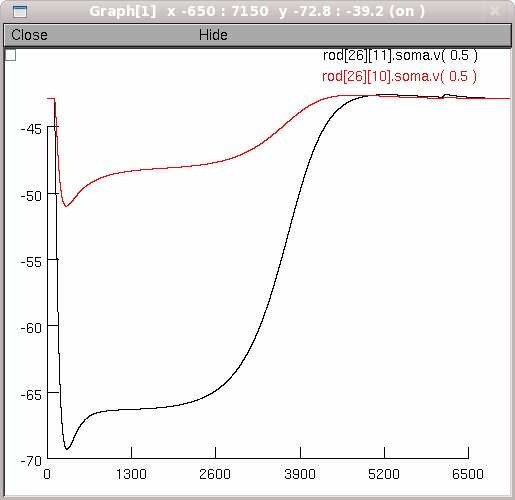
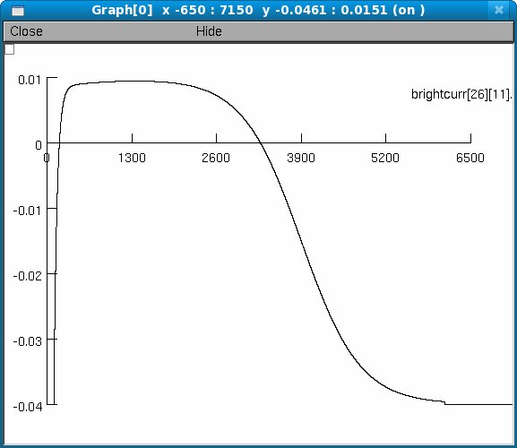

This is the readme for the model associated with paper: Publio R, Oliveira RF, Roque AC, 2009 "A Computational Study on the Role of Gap Junctions and Rod Ih Conductance in the Enhancement of the Dynamic Range of the Retina". PLoS ONE 4(9): e6970. doi:10.1371/journal.pone.0006970 These NEURON model files were contributed by Rodrigo Publio. Recent works suggest that one of the roles of gap junctions in sensory systems is to enhance their dynamic range by avoiding early saturation in the first processing stages. In this work, we use a minimal conductance-based model of the ON rod pathways in the vertebrate retina to study the effects of electrical synaptic coupling via gap junctions among rods and among AII amacrine cells on the dynamic range of the retina. The model is also used to study the effects of the maximum conductance of rod hyperpolarization activated current Ih on the dynamic range of the retina, allowing a study of the interrelations between this intrinsic membrane parameter with those two retina connectivity characteristics. Our results show that for realistic values of Ih conductance the dynamic range is enhanced by rod-rod coupling, and that AII-AII coupling is less relevant to dynamic range amplification in comparison with receptor coupling. Furthermore, a plot of the retina output response versus input intensity for the optimal parameter configuration is well fitted by a power law with exponent ~0.5. The results are consistent with predictions of more theoretical works and suggest that the earliest expression of gap junctions along the rod pathways, together with appropriate values of rod Ih conductance, has the highest impact on vertebrate retina dynamic range enhancement. ~ Figures 1 of "A Computational Study on the Role of Gap Junctions and Rod Ih Conductance in the Enhancement of the Dynamic Range of the Retina" can be replicated with this code, for example:   After compiling all MOD files load the appropriate HOC file (init.hoc) from the neuron main menu after starting nrngui or by either double clicking in mswin's window explorer, typing nrngui init.hoc in unix, or dragging and dropping the init.hoc file onto the nrngui icon in Mac OS X. Session files are called by the main HOC file. The network dimensions and synaptic convergence/divergence are specified at the parameters.hoc file. The cells are created from templates at the createcells.hoc while gap junctions and chemical synapses are created at netconnection.hoc. 20120326 Bip_Cad.mod and Rod_Cad.mod solve methods updated from euler to derivimplicit as recommended in http://www.neuron.yale.edu/phpbb/viewtopic.php?f=28&t=592